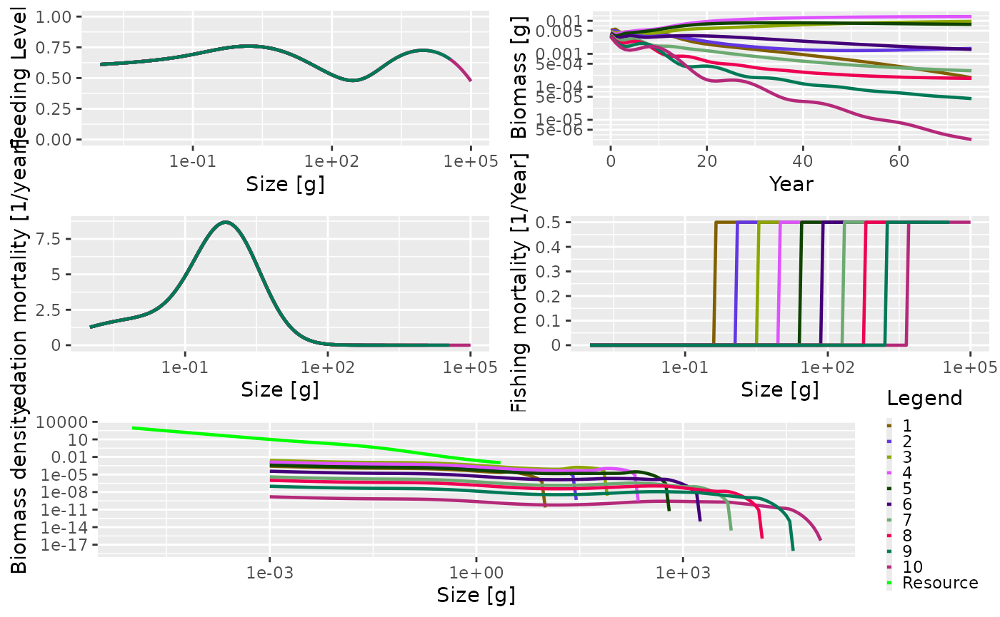

Introduction
The trait-based size spectrum model can be derived as a simplification of the general model outline in the model description section. It is more complicated than a community model and the most significant difference between the two is that while the community model aggregates all species into a single spectrum, the trait-based model resolves many species.
In a trait-based model the maximum size is considered to be the most important trait characterizing a species. Most of the species-specific parameters, such as \(\beta\) and \(\sigma\), are the same for all species. Other model parameters are determined by the maximum size. For example, the weight at maturation is a fixed fraction of the maximum size. The maximum sizes of the species are spread evenly on a logarithmic scale. The number of species is not important and does not affect the general dynamics of the model.
Setting up a trait-based model
To help set up a trait-based model, there is a wrapper function,
newTraitParams(). Like the
newCommunityParams() function described in the section on
the community model, this function
can take many arguments. Most of them have default values so you don’t
need to worry about them for the moment. See the help page for
newTraitParams() for more details.
One of the key differences between the community type model and the
trait-based model is that reproduction and egg production are
considered. In the community model, reproduction is constant and there
is no relationship between the abundance in the community and egg
production. In the trait-based model, the egg production is dependent on
mature individuals investing part of their energy income into
reproduction. The relationship between the energy invested into
reproduction and the actual rate of egg production is modelled using a
Beverton-Holt type function (the default in mizer,
see the
section on density-dependence in reproduction) where the
reproduction rate \(R_i\) (numbers per
time) approaches a maximum as the energy invested increases.
Here we set up the model to have 10 species, with maximum sizes ranging from 10 g to 100 kg. All the other parameters have default values.
params <- newTraitParams(no_sp = 10, min_w_max = 10, max_w_max = 1e5)This function returns an object of type MizerParams that
holds all the model information, including species parameters. This
object can therefore be interrogated in the same way as described in the section on the community model.
summary(params)## An object of class "MizerParams"
## Consumer size spectrum:
## minimum size: 0.001
## maximum size: 1e+05
## no. size bins: 161
## Resource size spectrum:
## minimum size: 1e-10
## maximum size: 2.23872
## no. size bins: 208 (301 size bins in total)
## Species details:
## species w_max w_mat w_min f0 fc beta sigma
## 1 1 8.912509e+00 2.511886 0.001 0.6 0.25 100 1.3
## 2 2 2.511886e+01 7.079458 0.001 0.6 0.25 100 1.3
## 3 3 7.079458e+01 19.952623 0.001 0.6 0.25 100 1.3
## 4 4 1.995262e+02 56.234133 0.001 0.6 0.25 100 1.3
## 5 5 5.623413e+02 158.489319 0.001 0.6 0.25 100 1.3
## 6 6 1.584893e+03 446.683592 0.001 0.6 0.25 100 1.3
## 7 7 4.466836e+03 1258.925412 0.001 0.6 0.25 100 1.3
## 8 8 1.258925e+04 3548.133892 0.001 0.6 0.25 100 1.3
## 9 9 3.548134e+04 10000.000000 0.001 0.6 0.25 100 1.3
## 10 10 1.000000e+05 28183.829313 0.001 0.6 0.25 100 1.3
##
## Fishing gear details:
## Gear Effort Target species
## ----------------------------------
## knife_edge_gear 0.00 1, 2, 3, 4, 5, 6, 7, 8, 9, 10The summary shows us that now we have 10 species in the model, with maximum sizes ranging from \(8.9125094\) to \(10^{5}\). The rather strange-looking values for the sizes is due to the fact that the size classes are equally spaced on a logarithmic scale.
The size at maturity (w_mat) is linearly related to the
maximum size. Each species has the same preferred predator-prey mass
ratio parameter values (beta and sigma, see the section on predator/prey mass
ratio). There are \(161\) size bins
in the community and \(301\) size bins
including the resource spectrum. Ignore the summary section on fishing
gear for the moment. This is explained later.
Running the trait-based model
As with the community model, we
can project the trait-based model through time using the
project() function. Here we project the model for 75 years
without any fishing (the effort argument is set to 0). We
use the default initial population abundances so there is no need to
pass in any initial population values (see the
section on setting the initial abundances).
sim <- project(params, t_max = 75, effort = 0)This results in a MizerSim object that contains the
abundances of the community and resource spectra through time, as well
as the original MizerParams object. As with the community
model, we can get a quick overview of the results of the simulation by
calling the plot() method:
plot(sim)
The summary plot has the same panels as the one generated by the community model, but here you can see that all the species in the community are plotted. The panels show the situation in the final time step of the simulation, apart from the biomass through time plot. As this is a trait-based model where all species fully interact with each other, the predation mortality and feeding level by size is the same for each species. In this simulation we turned fishing off so the fishing mortality is 0. The size-spectra show the abundances at size to be evenly spaced by log of maximum size.
Example of a trophic cascade with the trait-based model
As with the community model, it is possible to use the trait-based
model to simulate a trophic cascade. Again, we perform two simulations,
one with fishing and one without. We therefore need to consider how
fishing gears and selectivity have been set up by the
newTraitParams() function.
The default fishing selectivity function is a knife-edge function,
which only selects individuals larger than 1000 g. There is also only
one fishing gear in operation, and this selects all of the species. You
can see this if you call the summary() method on the
params argument we set up above. At the bottom of the
summary there is a section on Fishing gear details. You can see
that there is only one gear, called knife_edge_gear and
that it selects species 1 to 10. To control the size at which
individuals are selected there is a knife_edge_size
argument to the newTraitParams() function. This has a
default value of 1000 g.
In mizer it is possible to include more than one fishing
gear in the model and for different species to be caught by different
gears. We will ignore this for now, but will explore it further below
when we introduce an industrial fishery to the trait-based model.
To set up the trait-based model to have fishing we set up the
MizerParams object in exactly the same way as we did before
but here the knife_edge_size argument is explicitly passed
in for clarity:
params_knife <- newTraitParams(no_sp = 10, min_w_max = 10, max_w_max = 1e5,
knife_edge_size = 1000)First we perform a simulation without fishing in the same way we did
above by setting the effort argument to 0:
sim0 <- project(params_knife, effort = 0, t_max = 75)Now we simulate with fishing. Here, we use an effort of 0.75. As mentioned in the section on trophic cascades in the community model, the fishing mortality on a species is calculated as the product of effort, catchability and selectivity (see the section on fishing gears for more details). Selectivity ranges between 0 (not selected) and 1 (fully selected). The default value of catchability is 1. Therefore, in this simulation the fishing mortality of a fully selected individual is simply equal to the effort. This effort is constant throughout the duration of the simulation (however, mizer does allow variable effort).
sim1 <- project(params_knife, effort = 0.75, t_max = 75)Again, we can plot the summary of the fished community using the
default plot() function. The knife-edge selectivity at 1000
g can be clearly seen in the fishing mortality panel:
plot(sim1)
The trophic cascade can be explored by comparing the total abundances
of all species at size when the community is fished and unfished. As
mentioned above, we obtain the abundances with N(sim),
which returns a three dimensional array with dimensions time x species x
size. Here we have 76 time steps (75 from the simulation plus one which
stores the initial population), 10 species and 100 sizes:
## [1] 76 10 161As with the community model, we are interested in the relative total
abundances by size in the final time step so we use the
finalN() function. This gives us a matrix with one row per
species and one column per size bin. We sum in each column to get a
vector with the total abundance per size bin:
We can then use these vectors to calculate the relative abundances:
relative_abundance <- total_abund1 / total_abund0This can be plotted using the commands below:
plot(x = w(params), y = relative_abundance, log = "xy", type = "n",
xlab = "Size (g)", ylab = "Relative abundance", ylim = c(0.1, 10))
lines(x = w(params), y = relative_abundance)
lines(x = c(min(w(params)), max(w(params))), y = c(1, 1), lty = 2)
The impact of fishing on species larger than 1000 g can be clearly seen. The fishing pressure lowers the abundance of large fish (\(> 1000\) g). This then relieves the predation pressure on their smaller prey (the preferred predator-prey size ratio is given by the \(\beta\) parameter, which is set to 100 by default), leading to an increase in their abundance. This in turn increases the predation mortality on their smaller prey, which reduces their abundance and so on.
This impact can also be seen by looking at the predation mortality by
size. The predation mortalities are retrieved using the
getPredMort() function. As mentioned above, for the trait
based model the predation mortality by size is the same for each
species. Therefore we only look at the predation mortality of the first
species.
m2_no_fishing <- getPredMort(params, finalN(sim0))[1, ]
m2_with_fishing <- getPredMort(params, finalN(sim1))[1, ]The predation mortalities can then be plotted.
plot(x = w(params), y = m2_with_fishing, log = "x", type = "n",
xlab = "Size [g]", ylab = "Predation Mortality [1/year]")
lines(x = w(params), y = m2_no_fishing, lty = 2)
lines(x = w(params), y = m2_with_fishing)Predation mortalities from the unfished (dashed line) and fished (solid line) trait-based model.
Setting up an industrial fishing gear
In this section we want to operate an industrial fishery. Industrial fishing targets the small zooplanktivorous species that are typically used for fishmeal production.
In the previous simulations we had only one fishing gear and it targeted all the species in the community. This gear had a knife-edge selectivity that only selected species larger than 1 kg. We can see that when we look at the gear parameters
gear_params(params)## gear species sel_func knife_edge_size
## 1, knife_edge_gear knife_edge_gear 1 knife_edge 1000
## 2, knife_edge_gear knife_edge_gear 2 knife_edge 1000
## 3, knife_edge_gear knife_edge_gear 3 knife_edge 1000
## 4, knife_edge_gear knife_edge_gear 4 knife_edge 1000
## 5, knife_edge_gear knife_edge_gear 5 knife_edge 1000
## 6, knife_edge_gear knife_edge_gear 6 knife_edge 1000
## 7, knife_edge_gear knife_edge_gear 7 knife_edge 1000
## 8, knife_edge_gear knife_edge_gear 8 knife_edge 1000
## 9, knife_edge_gear knife_edge_gear 9 knife_edge 1000
## 10, knife_edge_gear knife_edge_gear 10 knife_edge 1000
## catchability
## 1, knife_edge_gear 1
## 2, knife_edge_gear 1
## 3, knife_edge_gear 1
## 4, knife_edge_gear 1
## 5, knife_edge_gear 1
## 6, knife_edge_gear 1
## 7, knife_edge_gear 1
## 8, knife_edge_gear 1
## 9, knife_edge_gear 1
## 10, knife_edge_gear 1We will expand the model to include multiple fishing gears. This
requires us to look more closely at how fishing gears are handled in
mizer. In mizer it is possible for a fishing
gear to catch only a subset of the species in the model. This is useful
because when running a simulation with project() you can
specify the effort per gear and so you can turn gears on or off as you
want. Each gear has a selectivity curve for each species.
We will set up the model to include two fishing gears: an
industrial gear that only catches species with a maximum
size less than or equal to 500g, and a second gear, other,
that catches everything else. The position of the knife-edge for both
gears will occur at 0.05 x the maximum size i.e. the selectivity
parameters will be different for each species and will depend on the
maximum size.
For this we will need to change the gear_params data
frame. If we want to keep the original model, we should first make a
copy before making modifications.
params_multi_gear <- paramsTo start with we need to know what the maximum sizes of the species
in the model are so we can determine the knife-edge positions for each
species. These are stored in the w_max column of the
species_params data frame inside the params
object. We can then use these maximum sizes to set a vector of knife
edge sizes that are 0.05 times the maximum size:
gear_params(params_multi_gear)$knife_edge_size <-
species_params(params)$w_max * 0.05Now we want to assign each species to either the industrial or other gear.
no_sp <- 10
gear <- rep("Industrial", no_sp)
gear[species_params(params)$w_max > 500] <- "Other"
gear_params(params_multi_gear)$gear <- gearTo check what has just happened let us look at the new gear parameter data frame:
gear_params(params_multi_gear)## gear species sel_func knife_edge_size catchability
## 1, Industrial Industrial 1 knife_edge 0.4456255 1
## 2, Industrial Industrial 2 knife_edge 1.2559432 1
## 3, Industrial Industrial 3 knife_edge 3.5397289 1
## 4, Industrial Industrial 4 knife_edge 9.9763116 1
## 5, Other Other 5 knife_edge 28.1170663 1
## 6, Other Other 6 knife_edge 79.2446596 1
## 7, Other Other 7 knife_edge 223.3417961 1
## 8, Other Other 8 knife_edge 629.4627059 1
## 9, Other Other 9 knife_edge 1774.0669462 1
## 10, Other Other 10 knife_edge 5000.0000000 1Having created our MizerParams object with multiple
gears, we can now turn our attention to running a projection with
multiple gears. In our previous examples of calling
project() we have specified the fishing effort with the
effort argument using a single value. This fixes the
fishing effort for all gears in the model, for all time steps. We can do
this with our multi-gear parameter object:
sim_multi_gear <- project(params_multi_gear, t_max = 75, effort = 0.5)By plotting this you can see that the fishing mortality for each species now has a different selectivity pattern, and that the position of the selectivity knife-edge is given by the maximum size of the species.
plot(sim_multi_gear)
For the industrial fishery we said that we only wanted species with a
maximum size of 500 g or less to be fished. There are several ways of
specifying the effort argument for project() .
Above we specified a single value that was used for all gears, for all
time steps. It is also possible to specify a separate effort for each
gear that will be used for all time steps. To do this we pass in effort
as a named vector. Here we set the effort for the Industrial
gear to 0.75, and the effort of the Other gear to 0
(effectively turning it off).
Now you can see that the Industrial gear has been operating and that fishing mortality for species larger than 500 g is 0.
plot(sim_multi_gear)
The impact of industrial fishing
In the previous section we set up and ran a model in which an
industrial fishery was operating that only selected smaller species. We
can now answer the question: what is the impact of such a fishery? We
can again compare abundances of the fished
(sim_industrial1) and unfished
(sim_industrial0) cases:
sim_industrial0 <- project(params_multi_gear, t_max = 75, effort = 0)
sim_industrial1 <- project(params_multi_gear, t_max = 75,
effort = c(Industrial = 0.75, Other = 0))
total_abund0 <- apply(finalN(sim_industrial0), 2, sum)
total_abund1 <- apply(finalN(sim_industrial1), 2, sum)
relative_abundance <- total_abund1 / total_abund0And plot the relative abundances:
plot(x = w(params), y = relative_abundance, log = "xy", type = "n",
xlab = "Size [g]", ylab = "Relative abundance", ylim = c(0.1, 10))
lines(x = w(params), y = relative_abundance)
lines(x = c(min(w(params)), max(w(params))), y = c(1, 1), lty = 2)
This shows another trophic cascade, although this time one driven by fishing the species at the midrange part of the spectrum, not the largest individuals as before. This trophic cascade acts in both directions. The cascade upwards is driven by the lack of food for predators leading to smaller realised maximum sizes. The cascade downwards has the same mechanism as fishing on large fish, a combination of predation mortality and food limitation.
The next section explains how to setup the more general multispecies model.